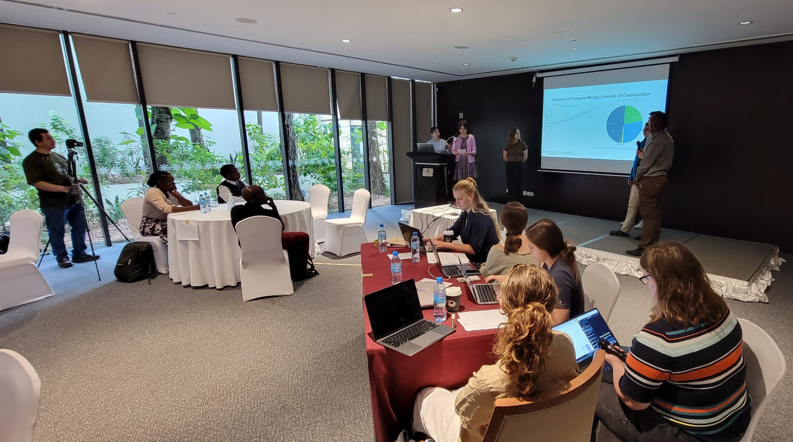

<!DOCTYPE html>
<html></html>
    <head>
        <title> Visit Tanzania!</title>
        <link rel="stylesheet" href="https://use.typekit.net/uvl7seo.css">
        <link rel="stylesheet" href="https://use.typekit.net/uvl7seo.css">
        <link rel="stylesheet" href="style.css">
    </head>
    <body>
        <div id="hero-container">
            <div id="hero-title">
                <h1>TANZANIA</h1>
            </div>
        </div>
        <div>
            <div class="page-container display-flex">
                <div id="ov-left">
                    <div class="display-flex">
                        <div id="ov-contents">
                            <h3>Table of Contents</h3>
                            <ul>
                                <li>Top Things to Do</li>
                                <li>Dar es Salaam</li>
                                <li>Zanzibar</li>
                                <li>Arusha + National Parks</li>
                                <li>How to Get Around</li>
                                <li>What to Bring</li>
                                <li>More Things to Do</li>
                            </ul>
                        </div>
                        <div id="ov-blurb-container">
                            <p class="large-line-height" >
                                Consul persius eos id. Mel no affert invidunt. Verear oblique elaboraret an vel. Nec prompta probatus at, populo suscipit vix ne. Te sea invenire vituperatoribus, ne mel prima pericula. Id pri assentior similique, mea an velit mazim simul. Stet ancillae qui ea, diam altera mei in.
                                <br> <br>
                                Id mei cibo aperiri, facete vocibus aliquando vis in. Est soleat adipisci efficiendi ad, te cum splendide abhorreant complectitur, ne sint utroque elaboraret qui. Bonorum constituam vim te, sed veniam conceptam id, unum equidem detracto mel ei. Duo quot detraxit scriptorem ei. Tamquam fastidii his cu. Ei eligendi disputationi ius, ea duo elitr maluisset.
                            </p>
                        </div>
                    </div>    
                    <div id="ov-itinerary" class="center">
                        <!-- fact check-->
                        <h3>itinerary.</h3>
                        <p>28 days</p>
                        <p class="emphasis">DAR ES SALAAM <span class="light">(9 NIGHTS)</span></p>
                        <p>means 'city of peace'.</p>
                        <p class="emphasis">ZANZIBAR <span class="light">(4 NIGHTS)</span></h5>
                        <p>a relatively unknown tropical destination.</p>
                        <p class="emphasis">ARUSHA <span class="light">(3 NIGHTS)</span></h5>
                        <p>A place I would stay for longer.</p>
                        <p class="emphasis">NATIONAL PARKS <span class="light">(9 NIGHTS)</span></p>
                        <p>Surprisingly diverse ecosystems and roaming animals.</p>
                    </div>
                </div>
                <div id="ov-right">
                    <div id="ov-map">
                        
                        <!--Would it be better to make an id for the image in css ? -->
                    </div>
                    <div id="ov-regions">
                        <ul>
                            <li>📍 Dar es Salaam</li>
                            <li>📍 Zanzibar</li>
                            <li>📍 Arusha</li>
                            <li>📍 National Parks</li>
                            <li>📍 Kilimanjaro</li>
                        </ul>
                    </div>
                </div>
            </div>
            <div class="page-container">
                <!-- Hm I wouldnt say these were all my favorite expereinces I just wanted to cover 
                    Dar, Zanzibar, and Game. Maybe think on this more lol-->
                <h2 class="center">Some Things to Do in Tanzania</h2>
                <div id="top-container">
                    <div class="top-card">
                        
                        <p class="emphasis baseline">Village Museum</p>
                    </div>
                    <div class="top-card">
                        
                        <p class="emphasis baseline">Tanzanite Shopping</p>
                    </div>
                    <div class="top-card">
                        
                        <p class="emphasis baseline">Nungwi Beach</p>
                    </div>
                    <div class="top-card">
                        
                        <p class="emphasis baseline">Serengeti Game Drive</p>
                    </div>
                    <div class="top-card">
                        
                        <p class="emphasis baseline">Walking Around</p>
                    </div>
                </div>
            </div>
            <div class="page-container">
                <div class="content-container">
                    <div class="content-images display-flex">
                        
                        
                    </div>
                    <div class="content-header">
                        <h2>Dar es Salaam</h2>
                        <p class="large-line-height">
                            Brief history + overview of Dar. Consul persius eos id. Mel no affert invidunt. Verear oblique elaboraret an vel. Nec prompta probatus at, populo suscipit vix ne. Te sea invenire vituperatoribus, ne mel prima pericula. Id pri assentior similique, mea an velit mazim simul. Stet ancillae qui ea, diam altera mei in.
                        </p>
                    </div>
                    <div class="content-blog">
                        <p> 
                            After almost  missing my connecting flight in Doha and 20 hours 
                            of traveling (not counting my 20 hour layover in New York) I'd 
                            finally arrived in Dar es Salaam. 
                        </p>
                        <p> 
                            After almost missing my connecting flight in Doha and 20 hours 
                            of traveling (not counting my 20 hour layover in New York) I'd 
                            finally arrived in Dar es Salaam. 
                        </p>
                        <p> 
                            The first thing I did was explore the nicest hotel I've ever stayed in. 
                            In the lobby there was a welcome table laid out with fresh coconuts, 
                            upstairs there was an infinity pool, a 24 hour gym, free sauna and steam room 
                            access, and a beautiful view of the sunset on the rooftop bar.
                        </p>
                        <p>
                            Immediately after, I knocked out; I was exhausted. 
                        </p>
                        <p>
                            When I woke up, I walked around with my roommate to find some food. Neither 
                            of us were too hungry so we stopped for some street food bites. I learned my 
                            first food in Kiswahili: <span class="swahili">chapati</span>, a flatbread. I'd be picking 
                            up vocabulary during the whole trip. Fish is <span class="swahili">samaki</span>, 
                            goat is <span class="swahili">nguzi</span>, chicken is <span class="swahili">kuku</span> 
                            and my roommate and I learned what 
                            <span class="swahili">ugali</span> was the hard way. 
                        </p>
                        <p>
                            The next day we headed over 
                            to a restaurant for lunch and before we left we asked out professor what he recommended 
                            for vegetarians. He confidently recommended <span class="swahili">ugali</span>, 
                            which he said was a kind of porridge; when I think of porridge, I think of soup or 
                            oatmeal. So when my roommate ordered it and a big ball of dough was brought out 
                            we were a little confused, we both assumed it would be like a dumpling, something with a 
                            filling. It had no filling. We were bamboozled. I'm sure the restaurant staff was laughing at us
                            cutting up the <span class="swahili">ugali</span> with a fork and knife: stupid tourists
                            (you're supposed to use it to grab and eat your food). To note, while the vegetarians on the trip
                            always got food they could eat, it was not always plentiful.
                        </p>
                        <p>
                            In short, learn some of the language before you travel to a new country. Some important terms and 
                            situations to know are several greeting phrases, please, thank you, you're welcome, basic numbers, bartering phrases, 
                            directional phrases, the name of your street, and some foods. Kiswahili is really easy to pick up since 
                            it's so phonetic and it will make your trip way better (and likely cheaper).
                        </p>
                        <div class="content-images-small">
                            
                            
                        </div>
                        <p>
                            Part of our scheduling was a brief lecture about the history of Tanzania, a city tour, and a visit to 
                            Village Museum. I  may add a history section later, after I read <span class="swahili">Ujamaa</span> by Julius 
                            Nyerere. The Village Museum was an experience. They showed us examples of housing that different 
                            native nomadic tribes build and informed us of some (likely false) burial practices and how conflicts are 
                            resolved by consensus between parties or by elder judgment. At the end there was a traditional dance that 
                            all of the students were eventually pulled into.
                        </p>
                        <p>
                            The next day classes started -- it was more of a conference where different people presented their 
                            research on the impacts of climate change (in general and specifically to Tanzania), some proposed 
                            solutions, and future research projects. It was an incredibly long day sitting for hours and sometimes,
                            since some of the research was really technical, indecipherable terms would go in one ear and out 
                            the other. Some of it was really interesting mainly, I thought, the stuff about flooding, costal 
                            resilience, and how it would affect impoverished areas.
                        </p>
                        <p>
                            I think enough people complained about the super long day enough, that it seemed we were sticking to the 
                            time schedule way better. Throughout the trip we visited COSTECH and the TMA (the latter of which was my 
                            favorite), had a couple more guest lecturers, and a lot of time dedicated to working on our projects.  
                        </p>
                        <p>
                            We were split up into teams, and the goal was to have a parliamentary budget meeting, where all teams 
                            would debate the importance, and thus budgetary allowance, of their goals and needs. The teams were 
                            split up into different government sectors such as 
                            infrastructure, services, tourism, industry, and agriculture. I think the goal was a bit too lofty; not only
                            for us to become fully knowledgable in our sectors (given the breadth of each), but also
                            to learn realistic budget expansions <i>and</i> which budget to advocate cuts from (which would imply needing to
                            know enough about the other sectors as well). Overall, I enjoyed the experience even though it was a bit inconclusive. 
                            We also sang karaoke after. We introduced the Tanzanians to some classic white people songs.
                        </p>
                        <div class="content-images-small">
                            
                            
                        </div>
                        <p>
                            On our off time, we went Tanzanite shopping (which I recommend doing in Dar, it's way cheaper), 
                            shopping in general at local markets, swimming in the hotel pool, and to visit the beach and tourist towns of the northern part of 
                            Dar es Salaam (Oyster Bay, Coco Beach, and Masaki). We really liked the restaurant/bar <span class="swahili">Samaki Samaki</span>, Fish and More. 
                            The night we went, there was karaoke, and we were going to go up to only realize that the kareoke singers were <i>belting</i>
                            Celine Dion, and hitting all the notes.
                        </p>
                        <p>
                            To get there you have to take some kind of transportation. Taxi is the safest, but most expensive. You also have the 
                            option to take <span class="swahili">boda bodas</span>, motocycle taxis, or <span class="swahili">tuk tuks</span> (or <span class="swahili">bajajs</span>), 
                            a motorized rickshaw. We mostly used the latter after learning we could cram 5 people into them for pretty cheap.
                            You can also take <span class="swahili">dala dalas</span>, minibuses, but we never figured out how those worked.
                        </p>
                    </div>
                </div>
                <div class="content-container">
                    <div class="content-images display-flex">
                        
                        
                    </div>
                    <div class="content-header">
                        <h2>Dar es Salaam</h2>
                        <p class="large-line-height">
                            Brief history + overview of Zanzibar.
                        </p>
                    </div>
                    <div class="content-blog">
                        <p> 
                            So to get to Zanzibar from Dar es Salaam you can fly or take the ferry like we did. Unfortunately, I fell asleep on the ferry 
                            but it's supposedly a very pretty trip. We had a very chaotic arrival in Zanzibar since you have to go through something like
                            immigration (even though it's a domestic trip).  Afterwards, we got on buses and drove along the entire west coast of the island to 
                            arrive to our hotel.
                        </p>
                        <!-- edit the first sentence not the ✨vibe-->
                        <p>
                            Entering the hotel was magical, we walked through a vibrant green foliage-covered pathway and then the view opened up to a beach bungalow sitting
                            on a beautiful sprawling white sand beach. Some daily activities were talking walks or bike rides along the beach, playing soccer with locals, and 
                            kayaking.
                        </p>
                        <p>
                            The magic wore off on me after a day or two: nested away started to feel more like isolated. Don't get me wrong, the hotel and location was still beautiful and 
                            I woke up every morning for the sun to rise over the water, had a yummy breakfast, and then went kayaking. But the island is pretty big, definitely not something you 
                            could walk around in a day (unlike some tour guide had previously mentioned). Pretty much the only place we could be was the hotel, and maybe its because I'm 
                            from Florida, but there's only so much you can do at the beach. It also just wasn't nearly as cheap as Dar to get around, so it's not like we could just 
                            leave ($100 for an hour taxi). 
                        </p>
                        <div class="content-images-small">
                            
                            
                        </div>
                        <p>
                            Fortunately there were some excursions included in the trip and we headed to Stone Town, which I loved and would have gotten lost in if not for the guides. It's a 
                            labyrinth of alleyways still decorated with a lot of the old Arab and Indian architecture. We spent the day walking around listening to the tour guide 
                            explaining how to notice different patterns in the historic doors. We had a bit of free time and bought some more souvenirs, but all in all Dar was the cheapest 
                            place to do so.
                        </p>
                        <p>
                            Later we went to Jozani Forest wandering through mangrove forests and later a jungle where we got to see some cute monkeys and huge trees. 
                            I wish the guava had been in season so we could have gotten to try some, I miss my guava tree. 
                        </p>
                        <div class="content-images-small">
                            
                            
                        </div>
                        <p>
                            Another day, we had a free day, and I could have opted to stay at the hotel, but obviously I didn't do that. We arranged a (pretty expensive) taxi 
                            to pick us up and take us to <span class="swahili">Nungwi</span> Beach as three of us had arranged to go horseback riding in the ocean. That same day, another 
                            group had arranged to go on a spice tour (where they got to buy locally made perfume oils 😭).  
                        </p>
                        <p>
                            While we thought the beach our hotel was on was pretty, Nungwi beach was gorgeous. The water was so blue and <i>so </i> clear and best of 
                            all there were people and businesses. Anyhow, my friends and I went to get our horses, we assured the lady that we had all ridden horses before (we had
                            not), and made our way out into the water. I was pretty surprised that we were riding bareback butt we got on the horses anyway and it was pretty damn hard
                            to balance and lead the horse in the water. At one point, I must've done something or my horse, <span class="swahili">Safari</span>, just got spooked 
                            and it started sprinting. I did my best to squeeze my legs as hard as possible and lean forward, and while I wasn't sure I was going to be able to stay on, that 
                            was definitely the highlight of my experience (also <span class="swahili">Safari</span>) just pooped in the water while he was walking, that was also an experience).
                        </p>
                        <p>
                            We hung out at the beach a little while longer, explored a little bit, and bought some souvenirs. We called the taxi back to take us to Mnarani
                            Turtle Conservatory, a natural spring where some native turtles are kept for conservation efforts. We got in the water with turtles of all sizes and some small fish, occasionally 
                            employees would throw in some kelp for the turtles and all the turtles would swarm the area. We eventually had to leave because we had to get back to the hotel for a lecture 
                            on network theory and transportation system vulnerability to flooding. There was also an effort to do a coding demonstration but none of us had working wifi, so it didn't really work out.
                        </p>
                        <p>
                            All in all, it was a good day - but tragedy stuck the next. The previous night Aidan had a 103 degree fever (reportedly 106), which freaked me out a lot and I think I went to bed early.
                            I woke up really achey, and kind of chalked it up to the horse back riding and went to breakfast. About half the group was going snorkeling
                            that day but I decided to stay at the hotel and explore the village. I really wasn't feeling good after breakfast so I got back in bed, planning to wake up in an hour. 
                        </p>
                        <p>
                            I did not wake up an hour later. When I woke up and it was light out, I thought I had slept until the next morning - it had been 30 minutes.
                        </p>
                        <p>
                            I had developed an 103 degree fever and was in and out of sleep all day. I had a cooling towel with ice that I'd placed behind my neck and on my head to try around 
                            cool myself down, but my fever just wasn't breaking. There was also a covid scare going around so everyone was taking tests. I took and ibuprofen and later when that did nothing 
                            I took a Tylenol. Finally, my fever broke around 6pm and I was covid negative. Apparently all day, people were having stomach issues and I started to have some too after my 
                            fever broke. I think about half of us ended up with food poisoning and we're still not really sure from where...
                        </p>
                        <div class="content-images-small">
                            
                            
                        </div>
                        
                    </div>
                </div>
                <div class="content-container">
                    <!--Maybe change content header-->
                    <div class="content-header">
                        <h2>Safety</h2>
                    </div>
                    <div class="content">
                        <p>
                            Learning no, etc
                        </p>
                    </div>
                </div>
            </div>
        </div>
    </body>
</html>